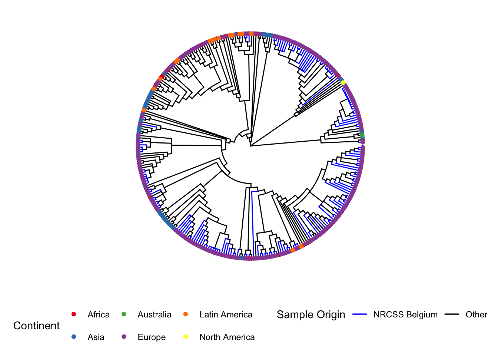
4 Phylogenetic trees
4.1 Overview
Phylogenetic trees are used to visualize and describe the relatedness and evolution of organisms based on the sequence of their genetic code.
They can be constructed from genetic sequences using distance-based methods (such as neighbor-joining method) or character-based methods (such as maximum likelihood and Bayesian Markov Chain Monte Carlo method). Next-generation sequencing (NGS) has become more affordable and is becoming more widely used in public health to describe pathogens causing infectious diseases. Portable sequencing devices decrease the turn around time and hold promises to make data available for the support of outbreak investigation in real-time. NGS data can be used to identify the origin or source of an outbreak strain and its propagation, as well as determine presence of antimicrobial resistance genes. To visualize the genetic relatedness between samples a phylogenetic tree is constructed.
In this page we will learn how to use the ggtree package, which allows for combined visualization of phylogenetic trees with additional sample data in form of a dataframe. This will enable us to observe patterns and improve understanding of the outbreak dynamic.
4.2 Preparation
Load packages
This code chunk shows the loading of required packages. In this handbook we emphasize p_load() from pacman, which installs the package if necessary and loads it for use. You can also load installed packages with library() from base R. See the page on R basics for more information on R packages.
pacman::p_load(
rio, # import/export
here, # relative file paths
tidyverse, # general data management and visualization
ape, # to import and export phylogenetic files
ggtree, # to visualize phylogenetic files
treeio, # to visualize phylogenetic files
ggnewscale) # to add additional layers of color schemesImport data
The data for this page can be downloaded with the instructions on the Download handbook and data page.
There are several different formats in which a phylogenetic tree can be stored (eg. Newick, NEXUS, Phylip). A common one is the Newick file format (.nwk), which is the standard for representing trees in computer-readable form. This means an entire tree can be expressed in a string format such as “((t2:0.04,t1:0.34):0.89,(t5:0.37,(t4:0.03,t3:0.67):0.9):0.59);”, listing all nodes and tips and their relationship (branch length) to each other.
Note: It is important to understand that the phylogenetic tree file in itself does not contain sequencing data, but is merely the result of the genetic distances between the sequences. We therefore cannot extract sequencing data from a tree file.
First, we use the read.tree() function from ape package to import a Newick phylogenetic tree file in .txt format, and store it in a list object of class “phylo”. If necessary, use the here() function from the here package to specify the relative file path.
Note: In this case the newick tree is saved as a .txt file for easier handling and downloading from Github.
tree <- ape::read.tree("data/phylo/Shigella_tree.txt")We inspect our tree object and see it contains 299 tips (or samples) and 236 nodes.
tree
Phylogenetic tree with 299 tips and 236 internal nodes.
Tip labels:
SRR5006072, SRR4192106, S18BD07865, S18BD00489, S17BD08906, S17BD05939, ...
Node labels:
17, 29, 100, 67, 100, 100, ...
Rooted; includes branch lengths.Second, we import a table stored as a .csv file with additional information for each sequenced sample, such as gender, country of origin and attributes for antimicrobial resistance, using the import() function from the rio package:
sample_data <- import("data/phylo/sample_data_Shigella_tree.csv")Below are the first 50 rows of the data:
Clean and inspect
We clean and inspect our data: In order to assign the correct sample data to the phylogenetic tree, the values in the column Sample_ID in the sample_data data frame need to match the tip.labels values in the tree file:
We check the formatting of the tip.labels in the tree file by looking at the first 6 entries using with head() from base R.
head(tree$tip.label) [1] "SRR5006072" "SRR4192106" "S18BD07865" "S18BD00489" "S17BD08906"
[6] "S17BD05939"We also make sure the first column in our sample_data data frame is Sample_ID. We look at the column names of our dataframe using colnames() from base R.
colnames(sample_data) [1] "Sample_ID" "serotype"
[3] "Country" "Continent"
[5] "Travel_history" "Year"
[7] "Belgium" "Source"
[9] "Gender" "gyrA_mutations"
[11] "macrolide_resistance_genes" "MIC_AZM"
[13] "MIC_CIP" We look at the Sample_IDs in the data frame to make sure the formatting is the same than in the tip.label (eg. letters are all capitals, no extra underscores _ between letters and numbers, etc.)
head(sample_data$Sample_ID) # we again inspect only the first 6 using head()[1] "S17BD05944" "S15BD07413" "S18BD07247" "S19BD07384" "S18BD07338"
[6] "S18BD02657"We can also compare if all samples are present in the tree file and vice versa by generating a logical vector of TRUE or FALSE where they do or do not match. These are not printed here, for simplicity.
We can use these vectors to show any sample IDs that are not on the tree (there are none).
sample_data$Sample_ID[!tree$tip.label %in% sample_data$Sample_ID]character(0)Upon inspection we can see that the format of Sample_ID in the dataframe corresponds to the format of sample names at the tip.labels. These do not have to be sorted in the same order to be matched.
We are ready to go!
4.3 Simple tree visualization
Different tree layouts
ggtree offers many different layout formats and some may be more suitable for your specific purpose than others. Below are a few demonstrations. For other options see this online book.
Here are some example tree layouts:
ggtree(tree) # simple linear tree
ggtree(tree, branch.length = "none") # simple linear tree with all tips aligned
ggtree(tree, layout="circular") # simple circular tree
ggtree(tree, layout="circular", branch.length = "none") # simple circular tree with all tips aligned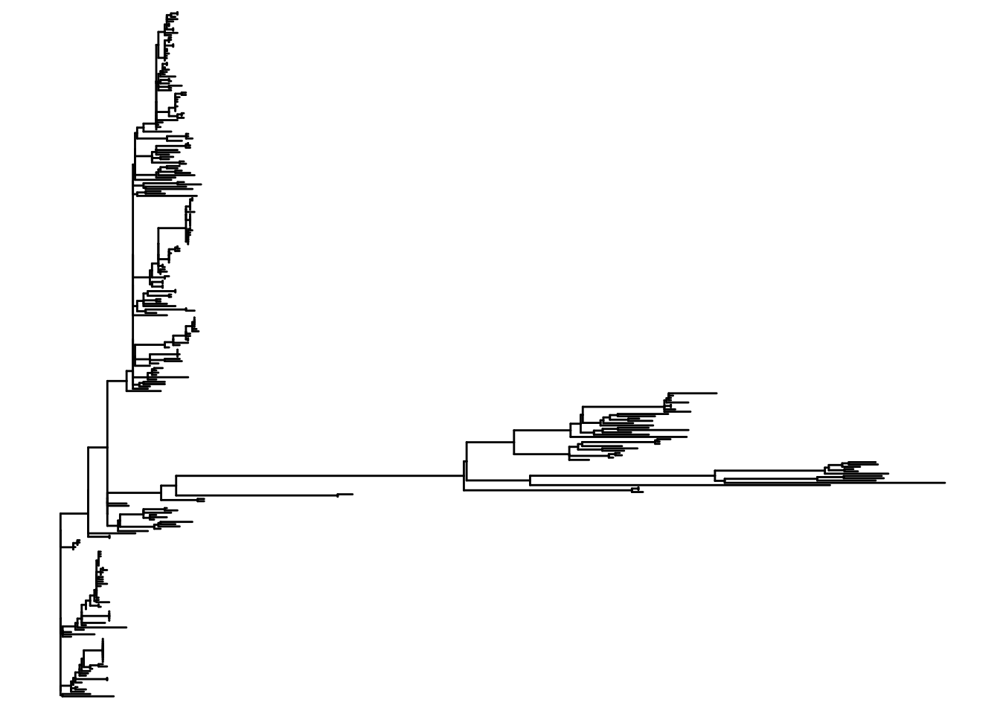
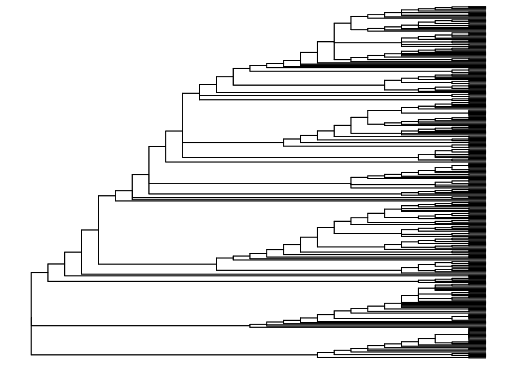
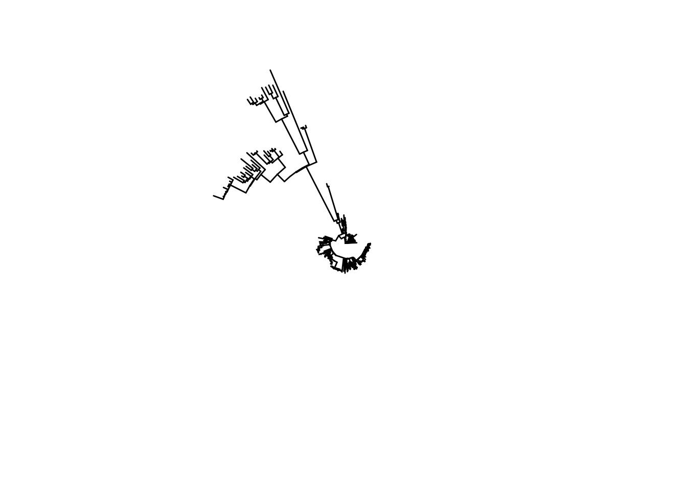
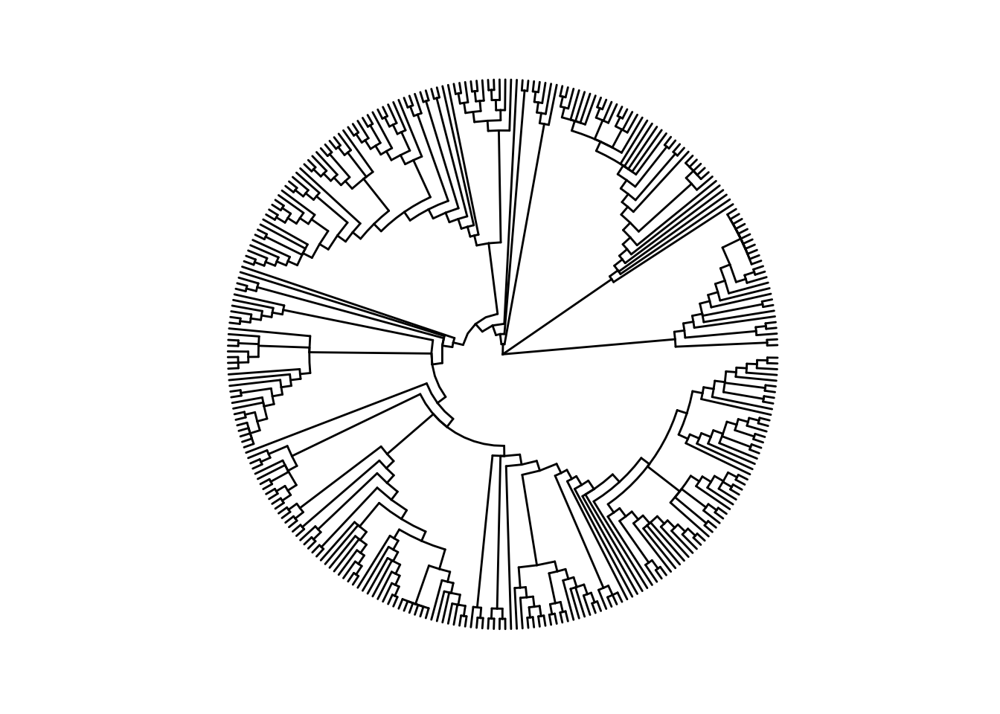
Simple tree plus sample data
The %<+% operator is used to connect the sample_data data frame to the tree file. The most easy annotation of your tree is the addition of the sample names at the tips, as well as coloring of tip points and if desired the branches:
Here is an example of a circular tree:
ggtree(tree, layout = "circular", branch.length = 'none') %<+% sample_data + # %<+% adds dataframe with sample data to tree
aes(color = Belgium)+ # color the branches according to a variable in your dataframe
scale_color_manual(
name = "Sample Origin", # name of your color scheme (will show up in the legend like this)
breaks = c("Yes", "No"), # the different options in your variable
labels = c("NRCSS Belgium", "Other"), # how you want the different options named in your legend, allows for formatting
values = c("blue", "black"), # the color you want to assign to the variable
na.value = "black") + # color NA values in black as well
new_scale_color()+ # allows to add an additional color scheme for another variable
geom_tippoint(
mapping = aes(color = Continent), # tip color by continent. You may change shape adding "shape = "
size = 1.5)+ # define the size of the point at the tip
scale_color_brewer(
name = "Continent", # name of your color scheme (will show up in the legend like this)
palette = "Set1", # we choose a set of colors coming with the brewer package
na.value = "grey") + # for the NA values we choose the color grey
geom_tiplab( # adds name of sample to tip of its branch
color = 'black', # (add as many text lines as you wish with + , but you may need to adjust offset value to place them next to each other)
offset = 1,
size = 1,
geom = "text",
align = TRUE)+
ggtitle("Phylogenetic tree of Shigella sonnei")+ # title of your graph
theme(
axis.title.x = element_blank(), # removes x-axis title
axis.title.y = element_blank(), # removes y-axis title
legend.title = element_text( # defines font size and format of the legend title
face = "bold",
size = 12),
legend.text=element_text( # defines font size and format of the legend text
face = "bold",
size = 10),
plot.title = element_text( # defines font size and format of the plot title
size = 12,
face = "bold"),
legend.position = "bottom", # defines placement of the legend
legend.box = "vertical", # defines placement of the legend
legend.margin = margin()) 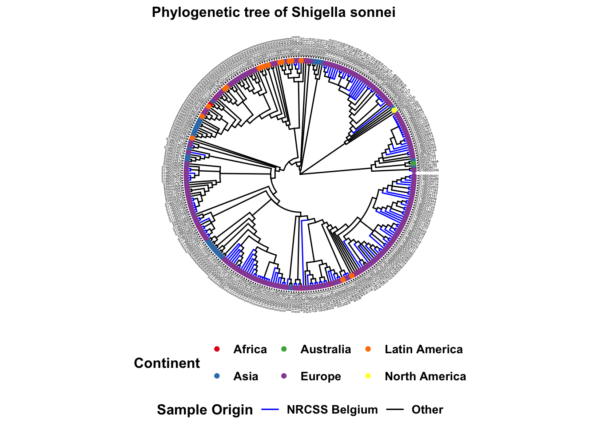
You can export your tree plot with ggsave() as you would any other ggplot object. Written this way, ggsave() saves the last image produced to the file path you specify. Remember that you can use here() and relative file paths to easily save in subfolders, etc.
ggsave("example_tree_circular_1.png", width = 12, height = 14)4.4 Tree manipulation
Sometimes you may have a very large phylogenetic tree and you are only interested in one part of the tree. For example, if you produced a tree including historical or international samples to get a large overview of where your dataset might fit in the bigger picture. But then to look closer at your data you want to inspect only that portion of the bigger tree.
Since the phylogenetic tree file is just the output of sequencing data analysis, we can not manipulate the order of the nodes and branches in the file itself. These have already been determined in previous analysis from the raw NGS data. We are able though to zoom into parts, hide parts and even subset part of the tree.
Zoom in
If you don’t want to “cut” your tree, but only inspect part of it more closely you can zoom in to view a specific part.
First, we plot the entire tree in linear format and add numeric labels to each node in the tree.
p <- ggtree(tree,) %<+% sample_data +
geom_tiplab(size = 1.5) + # labels the tips of all branches with the sample name in the tree file
geom_text2(
mapping = aes(subset = !isTip,
label = node),
size = 5,
color = "darkred",
hjust = 1,
vjust = 1) # labels all the nodes in the tree
p # print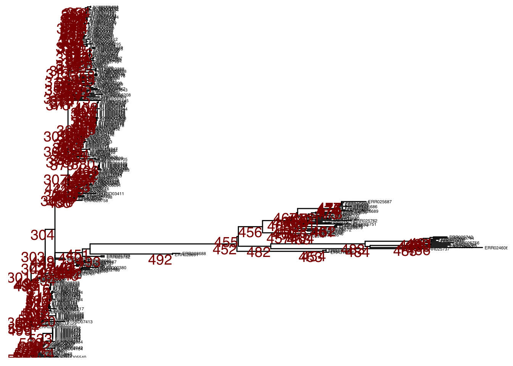
To zoom in to one particular branch (sticking out to the right), use viewClade() on the ggtree object p and provide the node number to get a closer look:
viewClade(p, node = 452)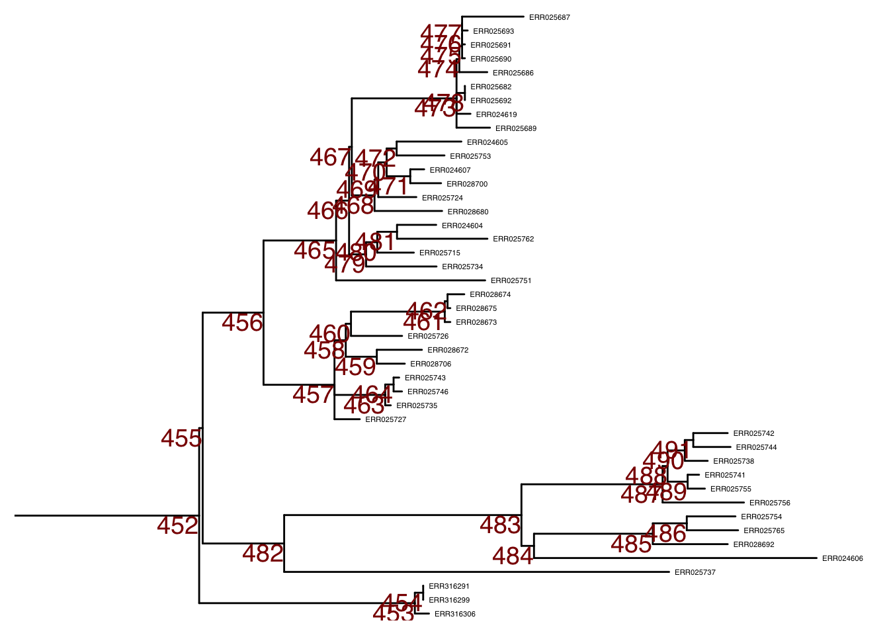
Collapsing branches
However, we may want to ignore this branch and can collapse it at that same node (node nr. 452) using collapse(). This tree is defined as p_collapsed.
p_collapsed <- collapse(p, node = 452)
p_collapsed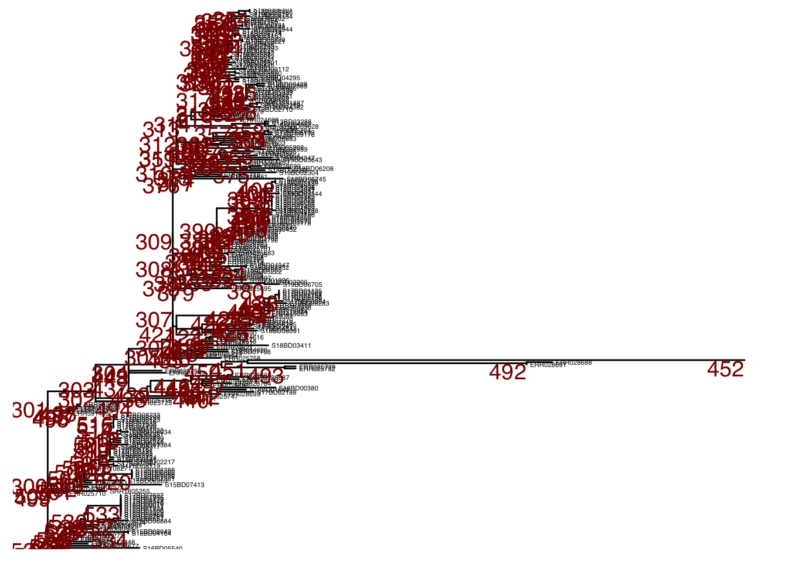
For clarity, when we print p_collapsed, we add a geom_point2() (a blue diamond) at the node of the collapsed branch.
p_collapsed +
geom_point2(aes(subset = (node == 452)), # we assign a symbol to the collapsed node
size = 5, # define the size of the symbol
shape = 23, # define the shape of the symbol
fill = "steelblue") # define the color of the symbol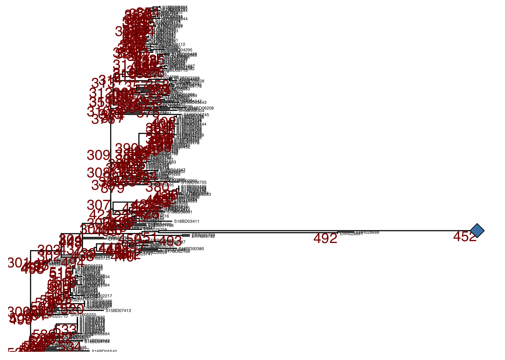
Subsetting a tree
If we want to make a more permanent change and create a new, reduced tree to work with we can subset part of it with tree_subset(). Then you can save it as new newick tree file or .txt file.
First, we inspect the tree nodes and tip labels in order to decide what to subset.
ggtree(
tree,
branch.length = 'none',
layout = 'circular') %<+% sample_data + # we add the asmple data using the %<+% operator
geom_tiplab(size = 1)+ # label tips of all branches with sample name in tree file
geom_text2(
mapping = aes(subset = !isTip, label = node),
size = 3,
color = "darkred") + # labels all the nodes in the tree
theme(
legend.position = "none", # removes the legend all together
axis.title.x = element_blank(),
axis.title.y = element_blank(),
plot.title = element_text(size = 12, face="bold"))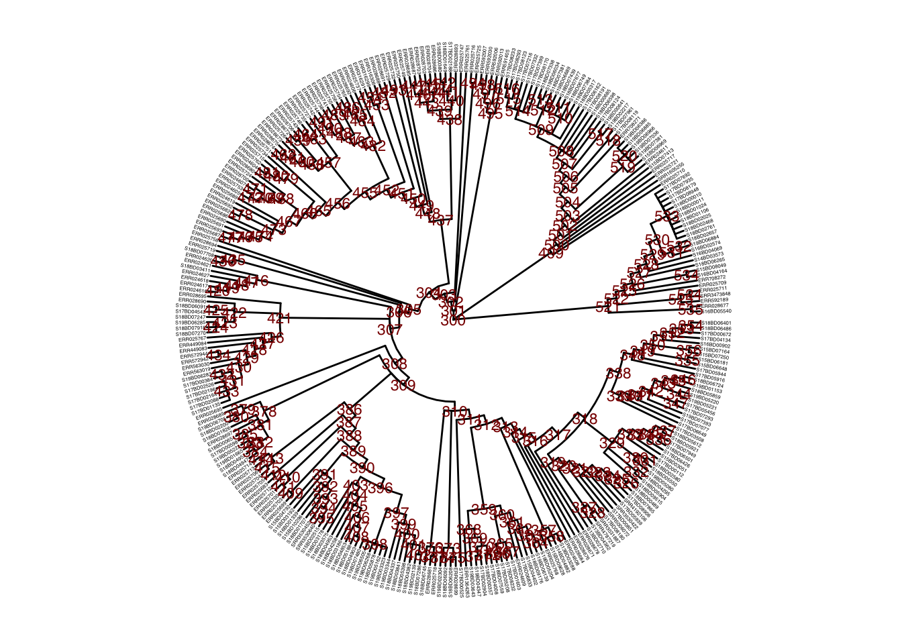
Now, say we have decided to subset the tree at node 528 (keep only tips within this branch after node 528) and we save it as a new sub_tree1 object:
sub_tree1 <- tree_subset(
tree,
node = 528) # we subset the tree at node 528Lets have a look at the subset tree 1:
ggtree(sub_tree1) +
geom_tiplab(size = 3) +
ggtitle("Subset tree 1")You can also subset based on one particular sample, specifying how many nodes “backwards” you want to include. Let’s subset the same part of the tree based on a sample, in this case S17BD07692, going back 9 nodes and we save it as a new sub_tree2 object:
sub_tree2 <- tree_subset(
tree,
"S17BD07692",
levels_back = 9) # levels back defines how many nodes backwards from the sample tip you want to goLets have a look at the subset tree 2:
ggtree(sub_tree2) +
geom_tiplab(size =3) +
ggtitle("Subset tree 2")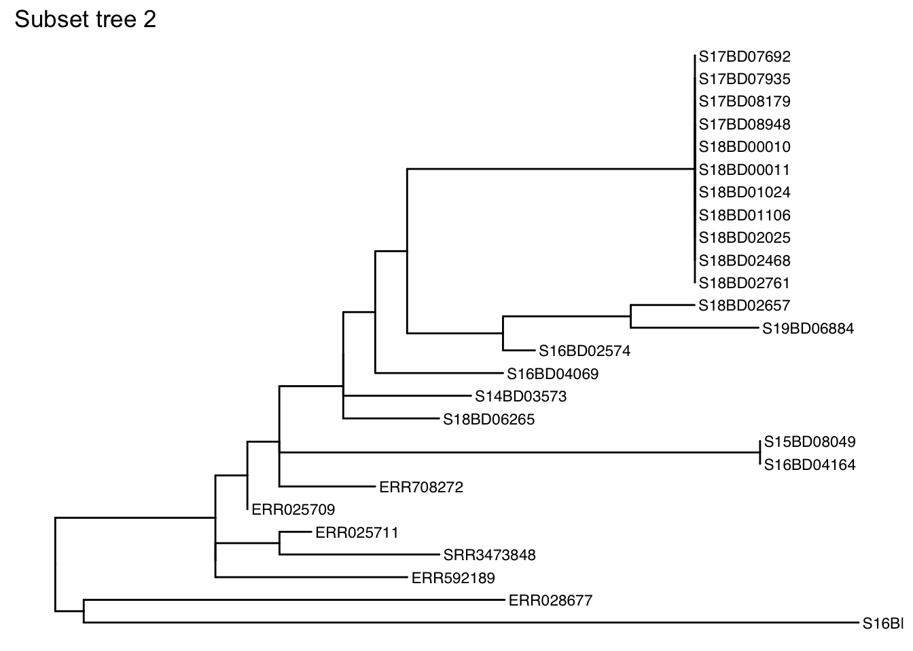
You can also save your new tree either as a Newick type or even a text file using the write.tree() function from ape package:
# to save in .nwk format
ape::write.tree(sub_tree2, file='data/phylo/Shigella_subtree_2.nwk')
# to save in .txt format
ape::write.tree(sub_tree2, file='data/phylo/Shigella_subtree_2.txt')Example subtree with sample data annotation
Lets say we are investigating the cluster of cases with clonal expansion which occurred in 2017 and 2018 at node 39 in our sub-tree. We add the year of strain isolation as well as travel history and color by country to see origin of other closely related strains:
ggtree(sub_tree2) %<+% sample_data + # we use th %<+% operator to link to the sample_data
geom_tiplab( # labels the tips of all branches with the sample name in the tree file
size = 2.5,
offset = 0.001,
align = TRUE) +
theme_tree2()+
xlim(0, 0.015)+ # set the x-axis limits of our tree
geom_tippoint(aes(color=Country), # color the tip point by continent
size = 1.5)+
scale_color_brewer(
name = "Country",
palette = "Set1",
na.value = "grey")+
geom_tiplab( # add isolation year as a text label at the tips
aes(label = Year),
color = 'blue',
offset = 0.0045,
size = 3,
linetype = "blank" ,
geom = "text",
align = TRUE)+
geom_tiplab( # add travel history as a text label at the tips, in red color
aes(label = Travel_history),
color = 'red',
offset = 0.006,
size = 3,
linetype = "blank",
geom = "text",
align = TRUE)+
ggtitle("Phylogenetic tree of Belgian S. sonnei strains with travel history")+ # add plot title
xlab("genetic distance (0.001 = 4 nucleotides difference)")+ # add a label to the x-axis
theme(
axis.title.x = element_text(size = 10),
axis.title.y = element_blank(),
legend.title = element_text(face = "bold", size = 12),
legend.text = element_text(face = "bold", size = 10),
plot.title = element_text(size = 12, face = "bold"))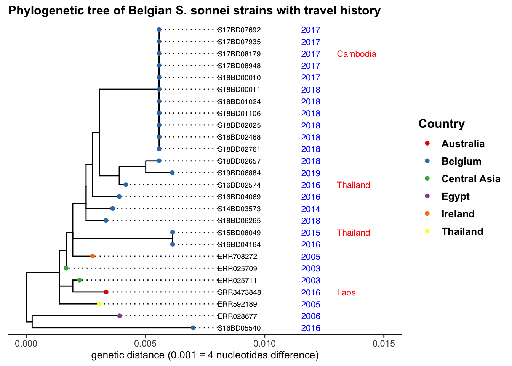
Our observation points towards an import event of strains from Asia, which then circulated in Belgium over the years and seem to have caused our latest outbreak.
More complex trees: adding heatmaps of sample data
We can add more complex information, such as categorical presence of antimicrobial resistance genes and numeric values for actually measured resistance to antimicrobials in form of a heatmap using the ggtree::gheatmap() function.
First we need to plot our tree (this can be either linear or circular - we will practice both) and store it in a new ggtree plot object p: We will use the sub_tree from earlier.
4.4.1 Circular plot
p <- ggtree(sub_tree2, branch.length='none', layout='circular') %<+% sample_data +
geom_tiplab(size =3) +
theme(
legend.position = "none",
axis.title.x = element_blank(),
axis.title.y = element_blank(),
plot.title = element_text(
size = 12,
face = "bold",
hjust = 0.5,
vjust = -15))
p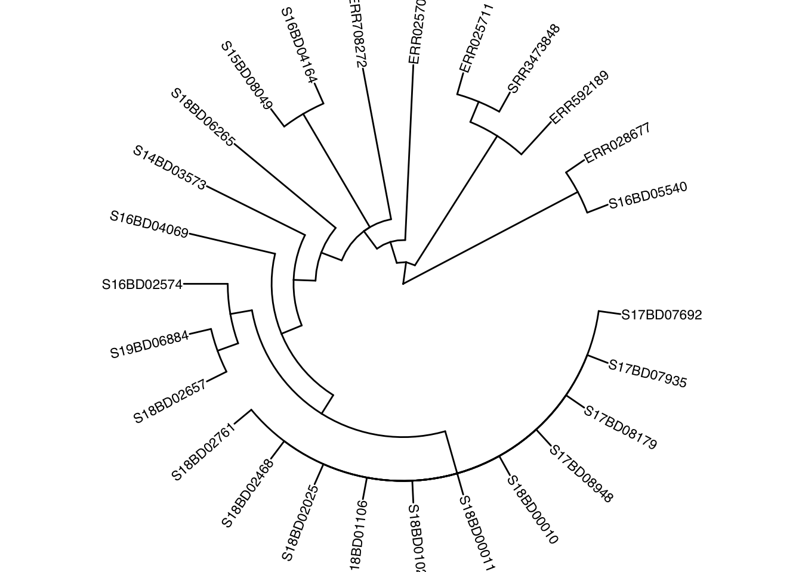
Second, we prepare our data. To visualize different variables with new color schemes, we subset our dataframe to the desired variable. It is important to add the Sample_ID as rownames otherwise it cannot match the data to the tree tip.labels:
In our example we want to look at gender and mutations that could confer resistance to Ciprofloxacin, an important first line antibiotic used to treat Shigella infections.
We create a dataframe for gender:
gender <- data.frame("gender" = sample_data[,c("Gender")])
rownames(gender) <- sample_data$Sample_IDWe create a dataframe for mutations in the gyrA gene, which confer Ciprofloxacin resistance:
cipR <- data.frame("cipR" = sample_data[,c("gyrA_mutations")])
rownames(cipR) <- sample_data$Sample_IDWe create a dataframe for the measured minimum inhibitory concentration (MIC) for Ciprofloxacin from the laboratory:
MIC_Cip <- data.frame("mic_cip" = sample_data[,c("MIC_CIP")])
rownames(MIC_Cip) <- sample_data$Sample_IDWe create a first plot adding a binary heatmap for gender to the phylogenetic tree and storing it in a new ggtree plot object h1:
h1 <- gheatmap(p, gender, # we add a heatmap layer of the gender dataframe to our tree plot
offset = 10, # offset shifts the heatmap to the right,
width = 0.10, # width defines the width of the heatmap column,
color = NULL, # color defines the boarder of the heatmap columns
colnames = FALSE) + # hides column names for the heatmap
scale_fill_manual(name = "Gender", # define the coloring scheme and legend for gender
values = c("#00d1b1", "purple"),
breaks = c("Male", "Female"),
labels = c("Male", "Female")) +
theme(legend.position = "bottom",
legend.title = element_text(size = 12),
legend.text = element_text(size = 10),
legend.box = "vertical", legend.margin = margin())Scale for y is already present.
Adding another scale for y, which will replace the existing scale.
Scale for fill is already present.
Adding another scale for fill, which will replace the existing scale.h1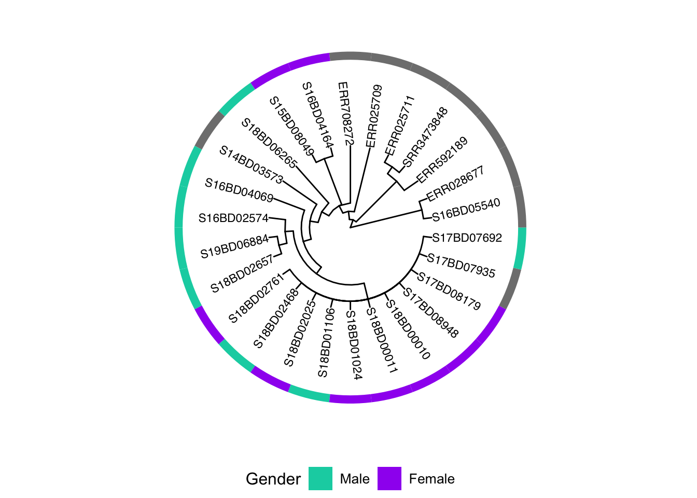
Then we add information on mutations in the gyrA gene, which confer resistance to Ciprofloxacin:
Note: The presence of chromosomal point mutations in WGS data was prior determined using the PointFinder tool developed by Zankari et al. (see reference in the additional references section)
First, we assign a new color scheme to our existing plot object h1 and store it in a now object h2. This enables us to define and change the colors for our second variable in the heatmap.
h2 <- h1 + new_scale_fill() Then we add the second heatmap layer to h2 and store the combined plots in a new object h3:
h3 <- gheatmap(h2, cipR, # adds the second row of heatmap describing Ciprofloxacin resistance mutations
offset = 12,
width = 0.10,
colnames = FALSE) +
scale_fill_manual(name = "Ciprofloxacin resistance \n conferring mutation",
values = c("#fe9698","#ea0c92"),
breaks = c( "gyrA D87Y", "gyrA S83L"),
labels = c( "gyrA d87y", "gyrA s83l")) +
theme(legend.position = "bottom",
legend.title = element_text(size = 12),
legend.text = element_text(size = 10),
legend.box = "vertical", legend.margin = margin())+
guides(fill = guide_legend(nrow = 2,byrow = TRUE))Scale for y is already present.
Adding another scale for y, which will replace the existing scale.
Scale for fill is already present.
Adding another scale for fill, which will replace the existing scale.h3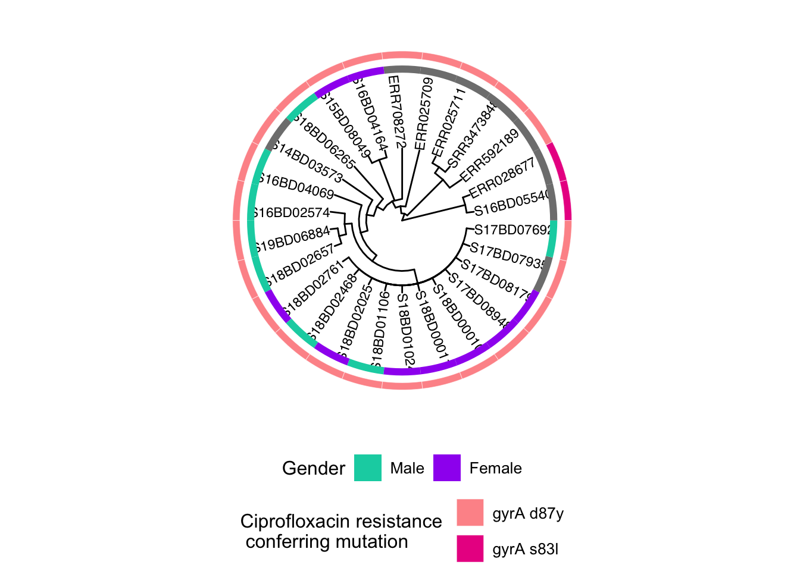
4.4.2 Linear plot
We can do the same exercise for a linear tree:
p <- ggtree(sub_tree2) %<+% sample_data +
geom_tiplab(size = 3) + # labels the tips
theme_tree2()+
xlab("genetic distance (0.001 = 4 nucleotides difference)")+
xlim(0, 0.015)+
theme(legend.position = "none",
axis.title.y = element_blank(),
plot.title = element_text(size = 12,
face = "bold",
hjust = 0.5,
vjust = -15))
p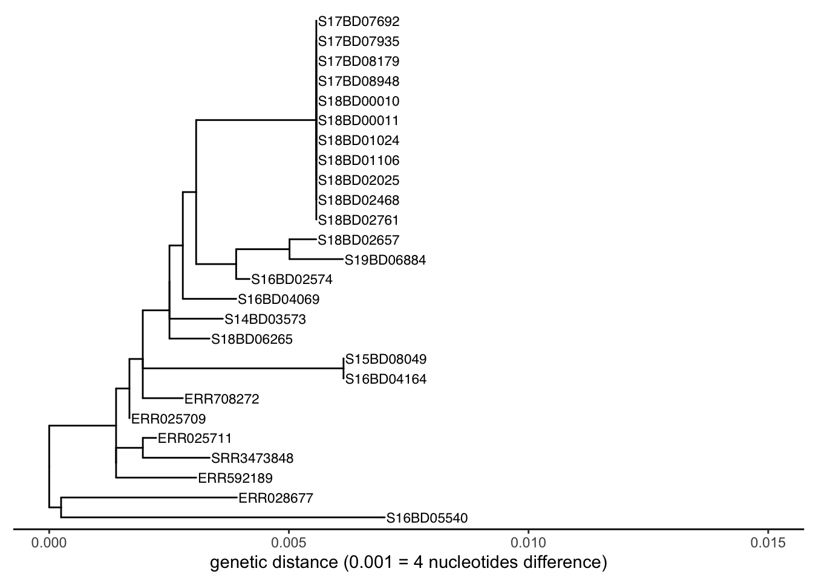
First we add gender:
h1 <- gheatmap(p, gender,
offset = 0.003,
width = 0.1,
color="black",
colnames = FALSE)+
scale_fill_manual(name = "Gender",
values = c("#00d1b1", "purple"),
breaks = c("Male", "Female"),
labels = c("Male", "Female"))+
theme(legend.position = "bottom",
legend.title = element_text(size = 12),
legend.text = element_text(size = 10),
legend.box = "vertical", legend.margin = margin())Scale for y is already present.
Adding another scale for y, which will replace the existing scale.
Scale for fill is already present.
Adding another scale for fill, which will replace the existing scale.h1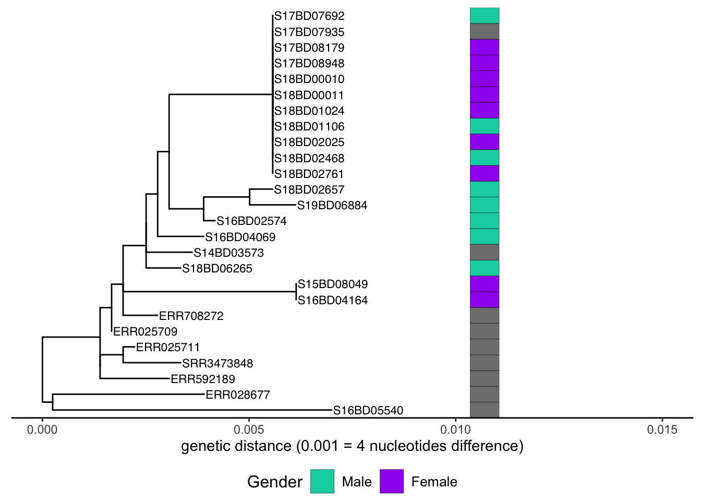
Then we add Ciprofloxacin resistance mutations after adding another color scheme layer:
h2 <- h1 + new_scale_fill()
h3 <- gheatmap(h2, cipR,
offset = 0.004,
width = 0.1,
color = "black",
colnames = FALSE)+
scale_fill_manual(name = "Ciprofloxacin resistance \n conferring mutation",
values = c("#fe9698","#ea0c92"),
breaks = c( "gyrA D87Y", "gyrA S83L"),
labels = c( "gyrA d87y", "gyrA s83l"))+
theme(legend.position = "bottom",
legend.title = element_text(size = 12),
legend.text = element_text(size = 10),
legend.box = "vertical", legend.margin = margin())+
guides(fill = guide_legend(nrow = 2,byrow = TRUE))Scale for y is already present.
Adding another scale for y, which will replace the existing scale.
Scale for fill is already present.
Adding another scale for fill, which will replace the existing scale. h3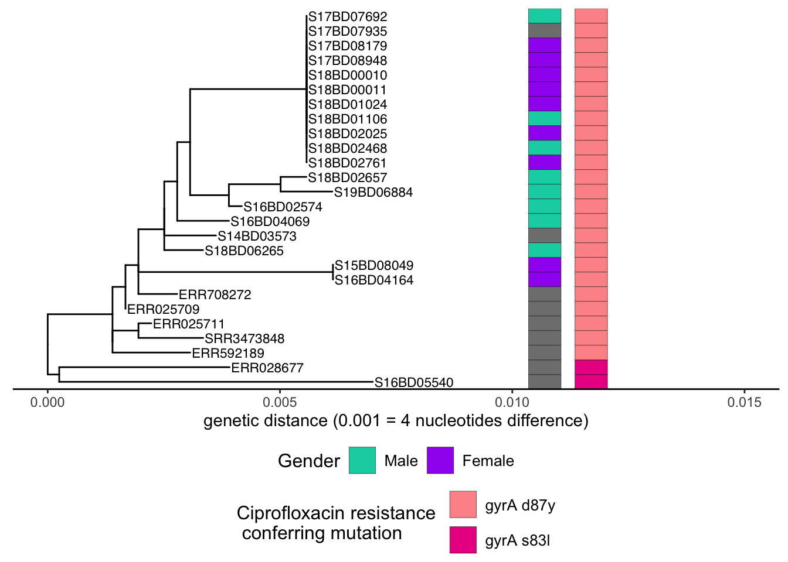
Then we add the minimum inhibitory concentration determined by the laboratory (MIC):
h4 <- h3 + new_scale_fill()
h5 <- gheatmap(h4, MIC_Cip,
offset = 0.005,
width = 0.1,
color = "black",
colnames = FALSE)+
scale_fill_continuous(name = "MIC for Ciprofloxacin",
low = "yellow", high = "red",
breaks = c(0,0.50,1.00),
na.value = "white")+
guides(fill = guide_colourbar(barwidth = 5, barheight = 1))+
theme(legend.position = "bottom",
legend.title = element_text(size = 10),
legend.text = element_text(size = 8),
legend.box = "horizontal", legend.margin = margin())+
guides(shape = guide_legend(override.aes = list(size = 2)))Scale for y is already present.
Adding another scale for y, which will replace the existing scale.
Scale for fill is already present.
Adding another scale for fill, which will replace the existing scale.h5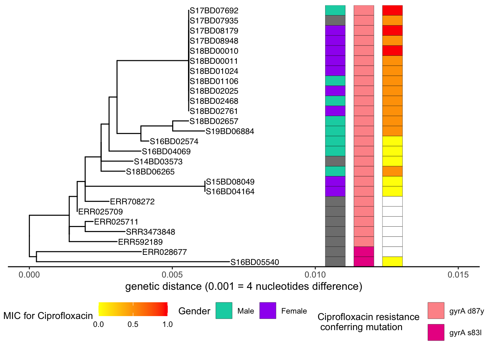
4.5 Resources
http://hydrodictyon.eeb.uconn.edu/eebedia/index.php/Ggtree# Clade_Colors https://bioconductor.riken.jp/packages/3.2/bioc/vignettes/ggtree/inst/doc/treeManipulation.html https://guangchuangyu.github.io/ggtree-book/chapter-ggtree.html https://bioconductor.riken.jp/packages/3.8/bioc/vignettes/ggtree/inst/doc/treeManipulation.html
Ea Zankari, Rosa Allesøe, Katrine G Joensen, Lina M Cavaco, Ole Lund, Frank M Aarestrup, PointFinder: a novel web tool for WGS-based detection of antimicrobial resistance associated with chromosomal point mutations in bacterial pathogens, Journal of Antimicrobial Chemotherapy, Volume 72, Issue 10, October 2017, Pages 2764–2768, https://doi.org/10.1093/jac/dkx217